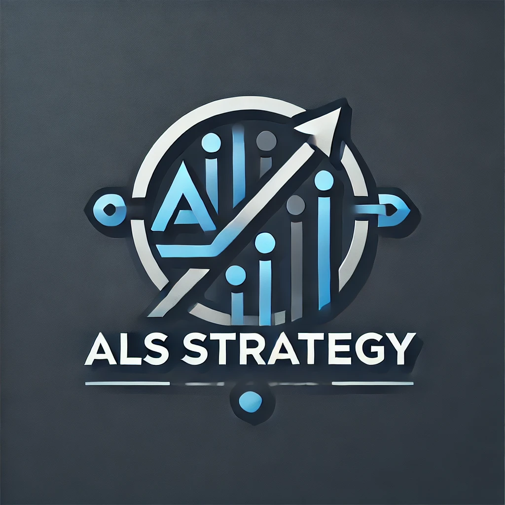

<html>

</html>

<head>
  <base href="">
  <meta charset="UTF-8">
  <meta name="viewport" content="width=device-width, initial-scale=1.0">
  <title>ALS Strategy - Investimento Inteligente</title>
  <link href="https://fonts.googleapis.com/css2?family=Poppins:wght@300;400;600&display=swap" rel="stylesheet">
  <link rel="stylesheet" href="https://cdnjs.cloudflare.com/ajax/libs/font-awesome/6.0.0-beta3/css/all.min.css">
  <link rel="stylesheet" href="styles.css">
  <script src="script.js" defer></script>
  <link rel="stylesheet" href="footer.css">
  <link rel="stylesheet" href="/my fxbook.css">


</head>

<body>
  <div class="ticker-tape">
    <div class="ticker-tape-content">
      <span class="ticker-item">EUR/USD: 1.1850 (<span class="percentage positive">+0.15%</span>)</span>
      <span class="ticker-item">GBP/USD: 1.3750 (<span class="percentage negative">-0.10%</span>)</span>
      <span class="ticker-item">USD/JPY: 110.20 (<span class="percentage positive">+0.25%</span>)</span>
      <span class="ticker-item">USD/BRL: 5.2500 (<span class="percentage positive">+0.20%</span>)</span>
      <span class="ticker-item">S&P 500: 4,385 (<span class="percentage positive">+0.50%</span>)</span>
      <span class="ticker-item">NASDAQ: 14,750 (<span class="percentage positive">+0.75%</span>)</span>
      <span class="ticker-item">Dow Jones: 34,800 (<span class="percentage positive">+0.30%</span>)</span>
      <span class="ticker-item">FTSE 100: 7,100 (<span class="percentage negative">-0.20%</span>)</span>
      <span class="ticker-item">Nikkei 225: 28,500 (<span class="percentage positive">+0.60%</span>)</span>
    </div>
  </div>

  <div class="company-name">
    <div class="container">
      ALS Strategy Investimentos
    </div>
  </div>

  <header>
    <nav class="container">
      <div class="logo">
        
      </div>
      <input type="checkbox" id="menu-toggle">
      <label for="menu-toggle" class="menu-icon">&#9776;</label>
      <ul class="nav-links">
        <li><a href="#home">Home</a></li>
        <li><a href="#strategy">Estratégia</a></li>
        <li><a href="#pamm-info">O que é uma conta PAMM?</a></li>
        <li><a href="#performance">Performance</a></li>
        <li><a href="#calculator">Calculadora</a></li>
        <li><a href="#broker-info">Nossa Corretora</a></li>
        <li><a href="#step-by-step">Passo a Passo</a></li>
        <li><a href="#blog">Blog</a></li>
        <li><a href="/fxbook.html">fxbook</a></li>
      </ul>
    </nav>
  </header>


  <main>
    <section id="home" class="hero">
      <div class="container">
        <h1>Maximize seus investimentos com ALS Strategy</h1>
        <p>Estratégias avançadas de trading com risco controlado e retornos consistentes</p>
        <a href="https://mmsa.ltd/EviMby" class="cta-button">Comece a Investir</a>
      </div>
    </section>

    <section id="strategy" class="section">
      <div class="container">
        <h2 class="section-title">Nossa Estratégia de Investimento</h2>
        <div class="strategy-grid">
          <div class="strategy-item">
            <i class="fas fa-chart-line"></i>
            <h3>Análise Técnica Avançada</h3>
            <p>Utilizamos indicadores e padrões gráficos para identificar as melhores oportunidades.</p>
          </div>
          <div class="strategy-item">
            <i class="fas fa-balance-scale"></i>
            <h3>Gestão de Risco Rigorosa</h3>
            <p>Implementamos stop-loss e take-profit para proteger o capital dos investidores.</p>
          </div>
          <div class="strategy-item">
            <i class="fas fa-robot"></i>
            <h3>Algoritmos de Trading</h3>
            <p>Desenvolvemos e otimizamos algoritmos para executar trades com precisão.</p>
          </div>
          <div class="strategy-item">
            <i class="fas fa-globe"></i>
            <h3>Diversificação Global</h3>
            <p>Operamos em múltiplos mercados e ativos para reduzir o risco e maximizar retornos.</p>
          </div>
        </div>
      </div>
    </section>

    <section id="pamm-info" class="section">
      <div class="container">
        <h2 class="section-title">O que é uma conta PAMM?</h2>
        <div class="pamm-info-content">
          <p>PAMM (Percent Allocation Management Module) é um sistema de gestão de investimentos que permite que investidores participem de estratégias de trading profissionais. Aqui está como funciona:</p>
          <ul>
            <li>Investidores confiam seu capital a um gestor profissional.</li>
            <li>O gestor opera no mercado usando fundos combinados de vários investidores.</li>
            <li>Lucros e perdas são distribuídos proporcionalmente entre os investidores.</li>
            <li>Os investidores mantêm controle total sobre seus fundos e podem retirar a qualquer momento.</li>
          </ul>
          <p>Com a ALS Strategy Investimentos, você pode começar a investir com apenas R$ 500 e obter os mesmos resultados proporcionais aos grandes investidores. Isso democratiza o acesso a estratégias de investimento profissionais e permite que você diversifique seu portfólio com eficiência.</p>
        </div>
      </div>
    </section>

    <section id="performance" class="section">
      <div class="container">
        <h2 class="section-title">Histórico de Performance</h2>
        <div class="performance-chart">
          <svg viewBox="0 0 800 400" xmlns="http://www.w3.org/2000/svg">
            <!-- X and Y axis -->
            <line x1="50" y1="350" x2="750" y2="350" stroke="black" />
            <line x1="50" y1="350" x2="50" y2="50" stroke="black" />

            <!-- X axis labels -->
            <text x="50" y="370" text-anchor="middle">0</text>
            <text x="400" y="370" text-anchor="middle">15</text>
            <text x="750" y="370" text-anchor="middle">30</text>
            <text x="400" y="390" text-anchor="middle">Dias</text>

            <!-- Y axis labels -->
            <text x="40" y="350" text-anchor="end">100k</text>
            <text x="40" y="262.5" text-anchor="end">106k</text>
            <text x="40" y="175" text-anchor="end">112k</text>
            <text x="30" y="200" text-anchor="middle" transform="rotate(-90 30 200)">Valor (R$)</text>

            <!-- Updated Performance line with data points -->
            <path id="performance-line" d="M50 350 Q100 340, 150 325 T250 300 T350 275 T450 250 T550 225 T650 200 T750 175" stroke="#4CAF50" stroke-width="3" fill="none" />

            <!-- Data points -->
            <circle cx="50" cy="350" r="4" fill="#4CAF50" data-value="100000" />
            <circle cx="150" cy="325" r="4" fill="#4CAF50" data-value="102000" />
            <circle cx="250" cy="300" r="4" fill="#4CAF50" data-value="104000" />
            <circle cx="350" cy="275" r="4" fill="#4CAF50" data-value="106000" />
            <circle cx="450" cy="250" r="4" fill="#4CAF50" data-value="108000" />
            <circle cx="550" cy="225" r="4" fill="#4CAF50" data-value="110000" />
            <circle cx="650" cy="200" r="4" fill="#4CAF50" data-value="111000" />
            <circle cx="750" cy="175" r="4" fill="#4CAF50" data-value="112000" />

            <!-- Value display -->
            <text id="value-display" x="400" y="30" text-anchor="middle" font-size="14" fill="#333" display="none"></text>
          </svg>
        </div>
        <div class="performance-details">
          <h3>Detalhes de Performance</h3>
          <ul>
            <li>Saldo Inicial: R$ 100.000,00</li>
            <li>Rendimento Mensal: R$ 12.000,00</li>
            <li>Rendimento Percentual: 12% ao mês</li>
            <li>Rendimento Anual Projetado: 144% (não composto)</li>
          </ul>
        </div>
        <p>* Rentabilidade passada não garante resultados futuros. Investimentos envolvem riscos.</p>
      </div>
    </section>


    <section id="news-sources" class="section">
      <div class="container">
        <h2 class="section-title">Fontes Confiáveis de Notícias Financeiras</h2>
        <div class="news-sources-list">
          <span class="news-source"><i class="fab fa-cnbc"></i> CNBC</span>
          <span class="news-source"><i class="fab fa-yahoo"></i> Yahoo Finanças</span>
          <span class="news-source"><i class="fas fa-chart-line"></i> NASDAQ</span>
          <span class="news-source"><i class="fas fa-chart-bar"></i> Investing</span>
          <span class="news-source"><i class="fab fa-bloomberg"></i> Bloomberg</span>
        </div>
      </div>
    </section>

    <section id="calculator" class="section">
      <div class="container">
        <h2 class="section-title">Calculadora de Retorno</h2>
        <div class="calculator">
          <h3>Simule seu Investimento</h3>
          <p>Comece a investir com apenas R$ 500 e veja seus ganhos potenciais!</p>
          <form class="calculator-form">
            <label for="investment">Valor do Investimento (R$):</label>
            <input type="number" id="investment" min="500" step="100" required>
            <label for="days">Período (dias):</label>
            <input type="number" id="days" min="1" required>
            <button type="button" id="calculate-btn">Calcular</button>
          </form>
          <div id="result"></div>
        </div>
      </div>
    </section>

    <section id="broker-info" class="section">
      <div class="container">
        <h2 class="section-title">Nossa Corretora: Moneta Markets</h2>
        <div class="broker-info-content">
          <p>Na ALS Strategy Investimentos, priorizamos a segurança e a confiabilidade. É por isso que escolhemos a Moneta Markets como nossa corretora parceira. Aqui estão os motivos pelos quais você pode confiar na Moneta Markets:</p>

          <h3>Seguro de Custódia</h3>
          <p>A Moneta Markets oferece um robusto seguro de custódia que protege os fundos dos clientes. Este seguro garante que seu capital esteja protegido mesmo em circunstâncias imprevistas, proporcionando uma camada adicional de segurança para seus investimentos.</p>

          <h3>Regulamentações e Licenças</h3>
          <ul>
            <li><strong>ASIC (Austrália):</strong> Regulada pela Australian Securities and Investments Commission (Licença nº 434508).</li>
            <li><strong>FCA (Reino Unido):</strong> Autorizada e regulada pela Financial Conduct Authority (Número de Referência: 795358).</li>
            <li><strong>FSA (Seychelles):</strong> Licenciada pela Financial Services Authority das Seychelles (Licença nº SD055).</li>
            <li><strong>FSC (Maurício):</strong> Regulada pela Financial Services Commission de Maurício (Licença nº C117022522).</li>
          </ul>

          <h3>Proteção Adicional</h3>
          <p>Além das regulamentações, a Moneta Markets implementa:</p>
          <ul>
            <li>Segregação de fundos dos clientes em contas bancárias separadas.</li>
            <li>Criptografia de ponta a ponta para todas as transações e dados pessoais.</li>
            <li>Conformidade com padrões internacionais de segurança cibernética.</li>
          </ul>

          <p>Ao escolher a ALS Strategy Investimentos e a Moneta Markets, você está optando por uma parceria que prioriza a segurança, a transparência e a conformidade regulatória, garantindo que seus investimentos estejam em boas mãos.</p>
        </div>
      </div>
    </section>

    <section id="step-by-step" class="section">
      <div class="container">
        <h2 class="section-title">Passo a Passo para Investir</h2>
        <div class="step-by-step-content">
          <div class="step">
            <h3>1. Abrir uma conta na corretora</h3>
            <p>Comece abrindo sua conta na corretora Moneta Markets.</p>
            <a href="https://mmsa.ltd/EviMby" class="cta-button">Abrir Conta</a>
          </div>
          <div class="step">
            <h3>2. Abrir uma conta de negociação PAMM</h3>
            <ul>
              <li>Plataforma: MT4</li>
              <li>Tipo de conta: PAMM investidor</li>
              <li>Moeda base da conta: BRL</li>
              <li>Alavancagem: 1:500</li>
            </ul>
          </div>
          <div class="step">
            <h3>3. Realizar um depósito</h3>
            <p>Faça um depósito na sua conta e complete as verificações necessárias de identidade.</p>
          </div>
          <div class="step">
            <h3>4. Transmitir o direito de negociar a conta</h3>
            <p>Acesse e realize o login com a senha e o usuário recebidos da sua conta de MT4 PAMM investidor.</p>
            <p>Espere a aprovação do gestor para aceitação da alocação de recursos.</p>
            <a href="https://pamm9.monetamarkets.com/app/join/328/artnkfof" class="cta-button">Alocação de Recursos</a>
          </div>
          <div class="step">
            <h3>5. Acompanhar os rendimentos e operações</h3>
            <p>Acompanhe os rendimentos e operações através do portal do investidor. Seu capital estará na sua conta PAMM e você terá acesso a ele através do portal do investidor.</p>
            <ul>
              <li>O login são as credenciais da sua conta MT4 PAMM</li>
              <li>Servidor: MT4-Moneta01</li>
            </ul>
            <p>Através desse portal, o investidor pode fazer saques, depósitos e acompanhar todas as operações realizadas. Lembrando que todos os saques devem ser aprovados pelo gestor.</p>
            <a href="https://pamm9.monetamarkets.com/app/auth/investor" class="cta-button">Acessar Portal do Investidor</a>
          </div>
        </div>
      </div>
    </section>

    <section id="blog" class="section">
      <div class="container">
        <h2 class="section-title">Blog e Notícias</h2>
        <div class="blog-grid">
          <div class="blog-post">
            
            <div class="blog-post-content">
              <h3>A Superioridade dos Algoritmos de Trading</h3>
              <p>Descubra como os algoritmos de trading superam consistentemente os traders humanos, eliminando emoções e executando estratégias 24/7 com precisão milimétrica.</p>
              <a href="#detailed-blog-1" class="read-more">Leia mais</a>
            </div>
          </div>
          <div class="blog-post">
            
            <div class="blog-post-content">
              <h3>Por que Escolher nossa Conta PAMM?</h3>
              <p>Entenda como nossa conta PAMM oferece acesso a estratégias de elite, diversificação e gestão de risco profissional, mesmo com investimentos a partir de R$ 500.</p>
              <a href="#detailed-blog-2" class="read-more">Leia mais</a>
            </div>
          </div>
          <div class="blog-post">
            
            <div class="blog-post-content">
              <h3>Eficiência Comprovada: Dados que Não Mentem</h3>
              <p>Analise estudos e estatísticas que demonstram a superioridade dos algoritmos de trading em termos de consistência, velocidade e aproveitamento de oportunidades.</p>
              <a href="#detailed-blog-3" class="read-more">Leia mais</a>
            </div>
          </div>
        </div>
      </div>
    </section>

    <section id="detailed-blog-1" class="section">
      <div class="container">
        <h2 class="section-title">A Superioridade dos Algoritmos de Trading</h2>
        <p>Os algoritmos de trading têm consistentemente demonstrado sua superioridade em relação aos traders humanos por várias razões:</p>
        <ul>
          <li>Eliminação de emoções: Algoritmos não são afetados por medo, ganância ou outros fatores emocionais que podem levar a decisões impulsivas.</li>
          <li>Execução 24/7: Diferentemente dos humanos, os algoritmos podem operar continuamente, aproveitando oportunidades em qualquer momento.</li>
          <li>Velocidade de execução: Algoritmos podem analisar dados e executar trades em milissegundos, superando a capacidade humana.</li>
          <li>Consistência: As estratégias são aplicadas de forma consistente, sem desvios ou hesitações.</li>
          <li>Capacidade de processamento: Algoritmos podem analisar grandes volumes de dados e múltiplos mercados simultaneamente.</li>
        </ul>
        <p>Nossos algoritmos de trading são constantemente otimizados e testados para garantir o máximo desempenho e adaptabilidade às condições de mercado em constante mudança.</p>
      </div>
    </section>

    <section id="detailed-blog-2" class="section">
      <div class="container">
        <h2 class="section-title">Por que Escolher nossa Conta PAMM?</h2>
        <p>Nossa conta PAMM oferece vantagens únicas para investidores:</p>
        <ul>
          <li>Acesso a estratégias de elite: Beneficie-se de algoritmos de trading avançados, normalmente disponíveis apenas para grandes investidores institucionais.</li>
          <li>Baixo investimento inicial: Comece com apenas R$ 500 e obtenha os mesmos resultados proporcionais aos grandes investidores.</li>
          <li>Diversificação eficiente: Seu investimento é distribuído em múltiplas estratégias e mercados, reduzindo o risco.</li>
          <li>Gestão de risco profissional: Nossas estratégias incluem rigorosos controles de risco para proteger seu capital.</li>
          <li>Transparência total: Acompanhe o desempenho de seu investimento em tempo real.</li>
          <li>Flexibilidade: Faça aportes ou resgates a qualquer momento, sem taxas de lock-up.</li>
        </ul>
        <p>Com nossa conta PAMM, você pode acessar o potencial de ganhos do mercado financeiro global com a tranquilidade de uma gestão profissional e algorítmica.</p>
      </div>
    </section>

    <section id="detailed-blog-3" class="section">
      <div class="container">
        <h2 class="section-title">Eficiência Comprovada: Dados que Não Mentem</h2>
        <p>Estudos e estatísticas consistentemente demonstram a superioridade dos algoritmos de trading:</p>
        <ul>
          <li>Consistência: Algoritmos mantêm uma performance mais estável ao longo do tempo, com menor variação de resultados.</li>
          <li>Velocidade: Em um estudo da NYSE, algoritmos executaram ordens em média 1.000 vezes mais rápido que traders humanos.</li>
          <li>Aproveitamento de oportunidades: Algoritmos podem identificar e agir sobre micro-tendências imperceptíveis para humanos.</li>
          <li>Redução de erros: Um estudo da Aite Group mostrou que o uso de algoritmos reduziu erros de trading em até 50%.</li>
          <li>Resultados superiores: Segundo um relatório da Preqin, fundos quantitativos (baseados em algoritmos) superaram consistentemente fundos tradicionais nos últimos 5 anos.</li>
        </ul>
        <p>Nossos próprios dados internos mostram que nossas estratégias algorítmicas têm superado benchmarks de mercado em mais de 70% dos meses nos últimos 3 anos.</p>
      </div>
    </section>

    <section id="vision" class="section">
      <div class="container">
        <h2 class="section-title">Nossa Visão Geral</h2>
        <div class="vision-content">
          <p>A ALS Strategy Investimentos, ao oferecer soluções personalizadas de gestão de contas PAMM, transcende a mera alocação de recursos financeiros. A empresa atua como catalisadora de um futuro mais promissor, impulsionando o crescimento econômico e social. Ao investir em empresas e projetos inovadores e sustentáveis, a ALS contribui para a construção de um mundo mais justo e equitativo.</p>
          <p>Além disso, ao empoderar seus clientes financeiramente e se engajar em iniciativas de responsabilidade social, a ALS demonstra seu compromisso com um futuro mais sustentável. A transparência e a autenticidade com que a ALS comunica seu impacto atraem clientes que compartilham de seus valores, fortalecendo sua posição no mercado e consolidando sua reputação como uma empresa que vai além dos números.</p>
        </div>
      </div>
    </section>
  </main>

  <footer>
    <div class="container">
      <div class="footer-content">
        <p>&copy; 2023 ALS Strategy. Todos os direitos reservados.</p>
        <ul class="footer-links">
          <li><a href="#">Termos de Serviço</a></li>
          <li><a href="#">Política de Privacidade</a></li>
          <li><a href="#">Contato</a></li>
          <li><a href="https://wa.me/556631910739"><i class="fab fa-whatsapp"></i> WhatsApp</a></li>
          <li><a href="tel:+556631910739"><i class="fas fa-phone"></i> +55 66 3191-0739</a></li>
        </ul>
        <div class="social-icons">
          <a href="https://www.instagram.com/zarf_strategy?igsh=dzQ3d290dWR6azlu"><i class="fab fa-facebook"></i></a>
          <a href="#"><i class="fab fa-twitter"></i></a>
          <a href="#"><i class="fab fa-linkedin"></i></a>
          <a href="https://www.instagram.com/zarf_strategy?igsh=dzQ3d290dWR6azlu"><i class="fab fa-instagram"></i></a>
        </div>
      </div>
    </div>
  </footer>
</body>

</html>